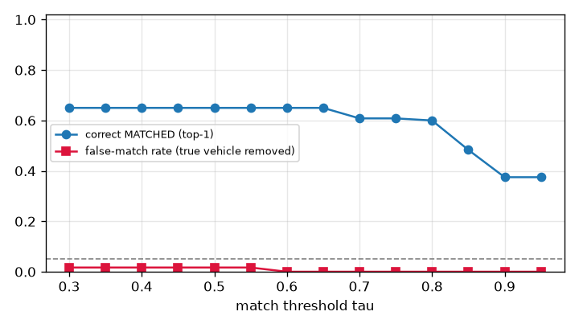

One forensic report per test clip (frames used, characters per frame with confidence, scoring and reasons, chain of custody). Generated 2026-11-24 07:44. PRISM output supports an investigator's decision. It does not identify a vehicle on its own.
| Clip | Combined plate | Status | Top candidate | Expected / truth | As expected | Report (SHA-256) |
|---|---|---|---|---|---|---|
| camB_white.mp4 single clip · 2 track(s) · 20.1 s | G04MX4821 | MATCHED | REG-0001 (0.97) | MATCHED / REG-0001 | ✔ | PDF 3523c76a037b300b… |
| day_auto_rickshaw.mp4 single clip · 4 track(s) · 13.86 s | KA01AH7350 | MATCHED | REG-0050 (1.00) | MATCHED / REG-0050 | ✔ | PDF e45cade5a18a4d57… |
| day_black_suv.mp4 single clip · 1 track(s) · 7.62 s | MH12DE5678 | MATCHED | REG-0010 (0.85) | MATCHED / REG-0010 | ✔ | PDF f67f93643ebeef4c… |
| day_blue_twoline.mp4 single clip · 1 track(s) · 8.03 s | KA05MN2023 | MATCHED | REG-0020 (1.00) | MATCHED / REG-0020 | ✔ | PDF 0c7547258b6384f5… |
| day_clear_white.mp4 single clip · 2 track(s) · 9.86 s | CG04MX4821 | MATCHED | REG-0001 (1.00) | MATCHED / REG-0001 | ✔ | PDF f085ebf27d3ab6d4… |
| day_scooter_twoline.mp4 single clip · 5 track(s) · 13.76 s | CG07BK3519 | MATCHED | REG-0040 (0.95) | MATCHED / REG-0040 | ✔ | PDF 53cff677bec83ac1… |
| day_white_truck.mp4 single clip · 1 track(s) · 7.66 s | CG04LQ2290 | MATCHED | REG-0060 (0.80) | MATCHED / REG-0060 | ✔ | PDF 962b37231eedb5bc… |
| night_partial_white.mp4 single clip · 2 track(s) · 9.45 s | CG04MX48?1 | AMBIGUOUS | REG-0001 (0.90) | AMBIGUOUS / REG-0001 | ✔ | PDF 5bfc617833a08342… |
| unregistered_white.mp4 single clip · 2 track(s) · 9.47 s | MH14XY0042 | NO CONFIDENT MATCH | REG-12881 (0.81) | NO CONFIDENT MATCH | ✔ | PDF 0a46b2aafcc0d81b… |
| night_partial_white.mp4 + camB_white.mp4 cross-camera · 2 track(s) · 20.79 s | G04MX4821 | MATCHED | REG-0001 (0.96) | MATCHED / REG-0001 | ✔ | PDF 2f3cc4ea873c2513… |
Synthetic plate-sequence benchmark: 120 registry vehicles x 8 degraded frames (raw + CLAHE reads), easy/medium/hard thirds, tau = 0.55. Device: cuda. **OCR benchmark** (full PRISM fusion + matching; each backend is cross-checked by the other, ms/read is the backend's own time) | OCR backend | Committed-char error | Recovery | Top-1 | Top-5 | False-match | ms/read | |---|---|---|---|---|---|---| | parseq | 1.2% | 64.0% | 67.5% | 68.3% | 1.7% | 25.6 | | fast_plate_ocr | 0.6% | 40.9% | 39.2% | 41.7% | 1.7% | 17.1 | | parseq alone (no cross-check) | 4.4% | 67.8% | 68.3% | 69.2% | 0.8% | 25.6 | | fast_plate_ocr alone (no cross-check) | 1.9% | 42.7% | 39.2% | 42.5% | 0.8% | 17.1 | Winner: **parseq** (highest top-1 with false-match <= 5%, then lowest committed error). **Ablation** (parseq) | Variant | Committed error | Recovery | Top-5 | False-match | |---|---|---|---|---| | Best single frame, no fusion | 17.2% | 70.4% | 64.2% | 0.0% | | Majority vote, no confidence masking | 16.3% | 67.2% | 60.8% | 0.0% | | + confidence masking | 17.1% | 66.5% | 61.7% | 0.0% | | + two-condition vote | 11.0% | 66.6% | 65.8% | 4.2% | | + format check + coverage factor, format violations masked only | 4.8% | 67.9% | 72.5% | 0.0% | | + layout-constrained decoding | 4.4% | 67.8% | 69.2% | 0.8% | | + OCR cross-check (full PRISM) | 1.2% | 64.0% | 68.3% | 1.7% | **Full PRISM by difficulty** | Level | Committed error | Recovery | Top-1 | Top-5 | False-match | |---|---|---|---|---|---| | easy | 0.0% | 99.2% | 100.0% | 100.0% | 0.0% | | medium | 0.9% | 87.4% | 97.5% | 97.5% | 0.0% | | hard | 23.1% | 5.1% | 5.0% | 7.5% | 5.0% | **Threshold sweep**: lowest tau with false-match rate <= 5% is **0.30** (false-match 1.7%, correct MATCHED 65.0%). Plot: `reports/tau_sweep.png`. **End-to-end clips** (full pipeline: YOLO11 + ByteTrack + fast-alpr + OCR + OpenCLIP) | Clip | Degradation | Fused plate | Status (expected) | Top-1 | Committed wrong | Colour/body | False-match | s | |---|---|---|---|---|---|---|---|---| | day_clear_white.mp4 | none | `CG04MX4821` | MATCHED (MATCHED) | yes | 0/10 | ok/ok | no | 14.4 | | night_partial_white.mp4 | none | `CG04MX48?1` | AMBIGUOUS (AMBIGUOUS) | yes | 0/9 | x/ok | YES | 10.5 | | camB_white.mp4 | none | `G04MX4821` | MATCHED (MATCHED) | yes | 0/9 | ok/ok | no | 9.8 | | day_black_suv.mp4 | none | `MH12DE5678` | MATCHED (MATCHED) | yes | 0/10 | ok/x | no | 7.8 | | day_blue_twoline.mp4 | none | `KA05MN2023` | MATCHED (MATCHED) | yes | 0/10 | ok/ok | no | 8.3 | | unregistered_white.mp4 | none | `MH14XY0042` | NO CONFIDENT MATCH (NO CONFIDENT MATCH) | no | 0/10 | ok/ok | no | 9.8 | | day_scooter_twoline.mp4 | none | `CG07BK3519` | MATCHED (MATCHED) | yes | 0/10 | x/ok | no | 14.0 | | day_auto_rickshaw.mp4 | none | `KA01AH7350` | MATCHED (MATCHED) | yes | 0/10 | ok/ok | no | 13.1 | | day_white_truck.mp4 | none | `CG04LQ2290` | MATCHED (MATCHED) | yes | 0/10 | x/ok | no | 7.4 | | camB_white__gauss.mp4 | gauss | `??04MX4821` | MATCHED (MATCHED) | yes | 0/8 | x/ok | no | 9.3 | | camB_white__motion.mp4 | motion | `??0??X4?2?` | AMBIGUOUS (MATCHED) | no | 0/4 | x/ok | no | 9.3 | | camB_white__down2x.mp4 | down2x | `G04MX4821` | MATCHED (MATCHED) | yes | 0/9 | ok/ok | no | 8.8 | | camB_white__down4x.mp4 | down4x | `??0?MX4?21` | AMBIGUOUS (MATCHED) | yes | 0/6 | x/ok | YES | 8.6 | | camB_white__jpeg20.mp4 | jpeg20 | `G04MX4821` | MATCHED (MATCHED) | yes | 0/9 | ok/ok | no | 10.7 | | camB_white__noise_dark.mp4 | noise_dark | `G04MX4821` | MATCHED (MATCHED) | yes | 0/9 | x/ok | no | 9.7 | | day_auto_rickshaw__gauss.mp4 | gauss | `KA01AH7350` | MATCHED (MATCHED) | yes | 0/10 | ok/ok | no | 14.4 | | day_auto_rickshaw__motion.mp4 | motion | `` | NO CONFIDENT MATCH (MATCHED) | yes | 0/0 | ok/ok | no | 15.0 | | day_auto_rickshaw__down2x.mp4 | down2x | `KA01AH7350` | MATCHED (MATCHED) | yes | 0/10 | ok/ok | no | 12.3 | | day_auto_rickshaw__down4x.mp4 | down4x | `KA01AH7350` | MATCHED (MATCHED) | yes | 0/10 | ok/ok | no | 12.3 | | day_auto_rickshaw__jpeg20.mp4 | jpeg20 | `KA01AH7350` | MATCHED (MATCHED) | yes | 0/10 | ok/ok | no | 11.3 | | day_auto_rickshaw__noise_dark.mp4 | noise_dark | `KA01AH7350` | MATCHED (MATCHED) | yes | 0/10 | ok/ok | no | 10.5 | | day_black_suv__gauss.mp4 | gauss | `M?12DE5678` | MATCHED (MATCHED) | yes | 0/9 | ok/x | no | 7.7 | | day_black_suv__motion.mp4 | motion | `???2?E?67?` | AMBIGUOUS (MATCHED) | yes | 0/4 | ok/ok | YES | 8.5 | | day_black_suv__down2x.mp4 | down2x | `MH12DE5678` | MATCHED (MATCHED) | yes | 0/10 | ok/ok | no | 7.1 | | day_black_suv__down4x.mp4 | down4x | `?H?2DE5?7?` | AMBIGUOUS (MATCHED) | yes | 0/6 | ok/ok | no | 6.7 | | day_black_suv__jpeg20.mp4 | jpeg20 | `MH12DE5678` | MATCHED (MATCHED) | yes | 0/10 | ok/x | no | 7.8 | | day_black_suv__noise_dark.mp4 | noise_dark | `MH12DE5678` | MATCHED (MATCHED) | yes | 0/10 | ok/x | no | 7.6 | | day_blue_twoline__gauss.mp4 | gauss | `KA05MN2023` | MATCHED (MATCHED) | yes | 0/10 | ok/ok | no | 7.7 | | day_blue_twoline__motion.mp4 | motion | `` | NO CONFIDENT MATCH (MATCHED) | no | 0/0 | ok/ok | no | 6.9 | | day_blue_twoline__down2x.mp4 | down2x | `KA05MN2023` | MATCHED (MATCHED) | yes | 0/10 | ok/ok | no | 7.3 | | day_blue_twoline__down4x.mp4 | down4x | `KA05MN2023` | MATCHED (MATCHED) | yes | 0/10 | ok/ok | no | 7.0 | | day_blue_twoline__jpeg20.mp4 | jpeg20 | `KA05MN2023` | MATCHED (MATCHED) | yes | 0/10 | ok/ok | no | 8.5 | | day_blue_twoline__noise_dark.mp4 | noise_dark | `` | NO CONFIDENT MATCH (MATCHED) | no | 0/0 | ok/ok | no | 7.0 | | day_clear_white__gauss.mp4 | gauss | `C??4MX4???` | AMBIGUOUS (MATCHED) | yes | 0/5 | x/ok | no | 8.8 | | day_clear_white__motion.mp4 | motion | `C?04?X4?21` | AMBIGUOUS (MATCHED) | yes | 0/7 | x/ok | no | 9.2 | | day_clear_white__down2x.mp4 | down2x | `CG04MX4821` | MATCHED (MATCHED) | yes | 0/10 | ok/ok | no | 9.0 | | day_clear_white__down4x.mp4 | down4x | `CG04MX4821` | MATCHED (MATCHED) | yes | 0/10 | ok/ok | no | 8.5 | | day_clear_white__jpeg20.mp4 | jpeg20 | `CG04MX4821` | MATCHED (MATCHED) | yes | 0/10 | ok/ok | no | 9.7 | | day_clear_white__noise_dark.mp4 | noise_dark | `CG04MX4821` | MATCHED (MATCHED) | yes | 0/10 | x/ok | no | 9.6 | | day_scooter_twoline__gauss.mp4 | gauss | `CG07BK3519` | MATCHED (MATCHED) | yes | 0/10 | x/ok | no | 11.7 | | day_scooter_twoline__motion.mp4 | motion | `CG07BK351?` | AMBIGUOUS (MATCHED) | yes | 0/9 | x/ok | YES | 10.2 | | day_scooter_twoline__down2x.mp4 | down2x | `CG07BK3519` | MATCHED (MATCHED) | yes | 0/10 | x/ok | no | 15.1 | | day_scooter_twoline__down4x.mp4 | down4x | `CG07BK3519` | MATCHED (MATCHED) | yes | 0/10 | x/ok | no | 10.8 | | day_scooter_twoline__jpeg20.mp4 | jpeg20 | `` | NO CONFIDENT MATCH (MATCHED) | no | 0/0 | x/ok | no | 15.0 | | day_scooter_twoline__noise_dark.mp4 | noise_dark | `` | NO CONFIDENT MATCH (MATCHED) | no | 0/0 | x/ok | no | 9.2 | | day_white_truck__gauss.mp4 | gauss | `CG04LQ2290` | MATCHED (MATCHED) | yes | 0/10 | x/ok | no | 7.7 | | day_white_truck__motion.mp4 | motion | `C?04LQ2290` | MATCHED (MATCHED) | yes | 0/9 | ok/ok | no | 7.9 | | day_white_truck__down2x.mp4 | down2x | `CG04LQ2290` | MATCHED (MATCHED) | yes | 0/10 | x/ok | no | 6.8 | | day_white_truck__down4x.mp4 | down4x | `CG04LQ2290` | MATCHED (MATCHED) | yes | 0/10 | ok/ok | no | 7.0 | | day_white_truck__jpeg20.mp4 | jpeg20 | `CG04LQ2290` | MATCHED (MATCHED) | yes | 0/10 | x/ok | no | 7.7 | | day_white_truck__noise_dark.mp4 | noise_dark | `CG04LQ2290` | MATCHED (MATCHED) | yes | 0/10 | x/ok | no | 7.6 | | night_partial_white__gauss.mp4 | gauss | `C?04MX4??1` | AMBIGUOUS (AMBIGUOUS) | yes | 0/7 | x/ok | no | 9.6 | | night_partial_white__motion.mp4 | motion | `??04?X4???` | AMBIGUOUS (AMBIGUOUS) | no | 0/4 | x/ok | no | 9.1 | | night_partial_white__down2x.mp4 | down2x | `CG04MX48?1` | AMBIGUOUS (AMBIGUOUS) | yes | 0/9 | x/ok | YES | 8.5 | | night_partial_white__down4x.mp4 | down4x | `CG04MX4??1` | AMBIGUOUS (AMBIGUOUS) | yes | 0/8 | x/ok | no | 8.5 | | night_partial_white__jpeg20.mp4 | jpeg20 | `CG04MX48?1` | AMBIGUOUS (AMBIGUOUS) | yes | 0/9 | x/ok | YES | 9.2 | | night_partial_white__noise_dark.mp4 | noise_dark | `CG04MX48?1` | AMBIGUOUS (AMBIGUOUS) | yes | 0/9 | x/ok | YES | 9.1 | | unregistered_white__gauss.mp4 | gauss | `MH14XY0042` | NO CONFIDENT MATCH (NO CONFIDENT MATCH) | no | 0/10 | x/ok | no | 9.6 | | unregistered_white__motion.mp4 | motion | `?H?4XY0042` | NO CONFIDENT MATCH (NO CONFIDENT MATCH) | no | 0/8 | x/ok | no | 9.4 | | unregistered_white__down2x.mp4 | down2x | `MH14XY0042` | NO CONFIDENT MATCH (NO CONFIDENT MATCH) | no | 0/10 | ok/ok | no | 9.0 | | unregistered_white__down4x.mp4 | down4x | `MH14XY0042` | NO CONFIDENT MATCH (NO CONFIDENT MATCH) | no | 0/10 | x/ok | no | 9.0 | | unregistered_white__jpeg20.mp4 | jpeg20 | `MH14XY0042` | NO CONFIDENT MATCH (NO CONFIDENT MATCH) | no | 0/10 | ok/ok | no | 10.3 | | unregistered_white__noise_dark.mp4 | noise_dark | `MH14XY0042` | NO CONFIDENT MATCH (NO CONFIDENT MATCH) | no | 0/10 | x/ok | no | 9.8 | Clips (63): status as designed 81.0%, committed-char error 0.0%, recovery 83.5%, top-1 89.3%, top-5 92.9%, MATCHED to the wrong vehicle 0, false-match with true vehicle removed 11.1%, colour 52.4%, body 93.7%, mean 9.5 s/clip. By body type (clips incl. degraded versions): SUV 7 clips, body type 42.9%, top-1 100.0%; auto-rickshaw 7 clips, body type 100.0%, top-1 100.0%; car 35 clips, body type 100.0%, top-1 85.7%; truck 7 clips, body type 100.0%, top-1 100.0%; two-wheeler 7 clips, body type 100.0%, top-1 71.4%.
